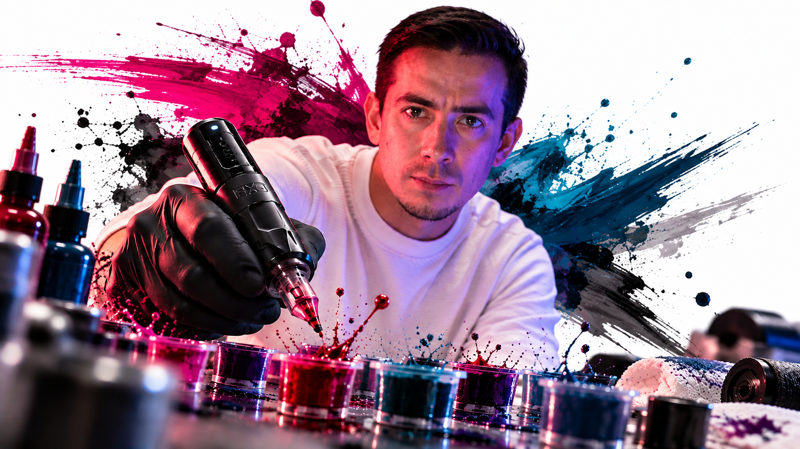

FORMACIÓN PRESENCIAL · SANTIAGO DE CHILE
MASTERCLASS PRIVADA 1 A 1
Una jornada intensiva de formación en técnicas de tatuaje de aproximadamente seis horas. La práctica se realiza en piel sintética.
FORMACIÓN PERSONALIZADA
Una jornada intensiva para perfeccionar tu técnica
Soy Cristhian Gularte, tatuador y artista visual con 16 años de experiencia.
Durante aproximadamente seis horas trabajaremos de forma individual sobre piel sintética. Te mostraré mis técnicas paso a paso, practicarás bajo mi supervisión y podremos corregir detalles directamente durante la jornada.
Al ser una formación privada 1 a 1, puedo observar directamente tu forma de trabajar, ayudarte a corregir detalles y responder tus dudas durante toda la experiencia.
PROGRAMA DE LA MASTERCLASS
¿Qué vamos a trabajar?
01 — Materiales y equipamiento
02 — Preparación de la mesa de trabajo
03 — Higiene y contaminación cruzada
04 — Ajuste de voltaje y tipos de agujas
05 — Demostración de técnicas en piel sintética
06 — Práctica supervisada en piel sintética
07 — Diseño y preparación del esténcil
08 — Cuidados posteriores del tatuaje
09 — Cómo fotografiar y grabar correctamente tu trabajo
MODALIDAD
6 horas · Presencial · 1 a 1
La masterclass se realiza presencialmente en Santiago de Chile, Macul.
Al finalizar la jornada recibirás un certificado de asistencia.
MASTERCLASS PRIVADA
$239.990 CLP
Formación presencial individual de aproximadamente 6 horas.
Para reservar la fecha se realiza un abono de $50.000 CLP, que se descuenta del valor total de la masterclass.
CONSULTAR DISPONIBILIDAD